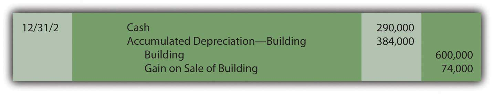
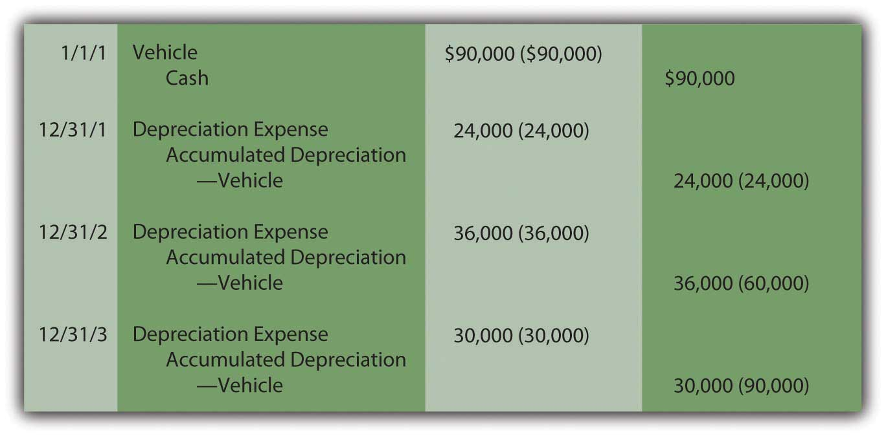
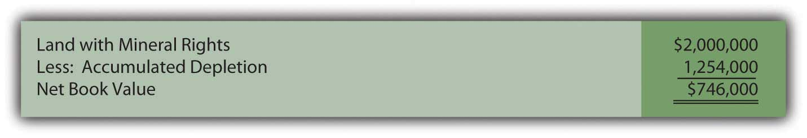
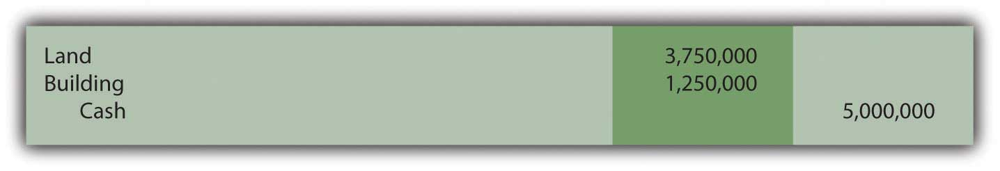
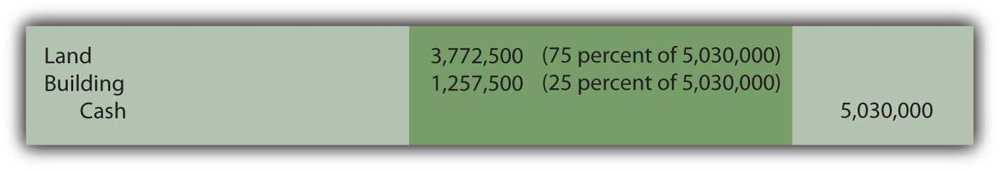
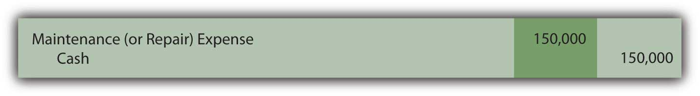
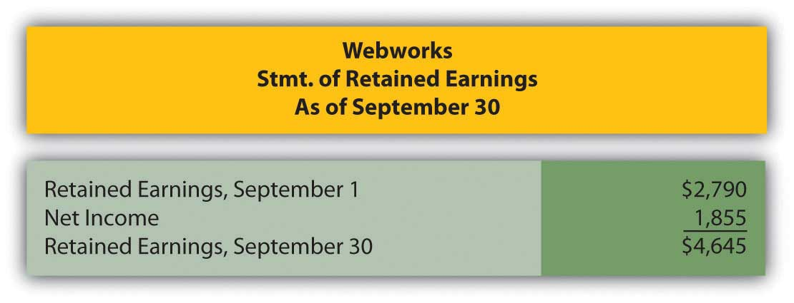

Joe introduces Chapter 10 "In a Set of Financial Statements, What Information Is Conveyed about Property and Equipment?" and speaks about the course in general.
At the end of this section, students should be able to meet the following objectives:
Question: Wal-Mart Stores Inc. owns thousands of huge retail outlets and supercenters located throughout the United States and many foreign countries. These facilities contain a wide variety of machinery, fixtures and the like such as cash registers and shelving. On its January 31, 2009, balance sheet, Wal-Mart reports “property and equipment, net” of nearly $93 billion, a figure that made up almost 60 percent of the company’s total assets. This monetary amount was more than twice as large as any other asset reported by this company. Based on sheer size, the information conveyed about this group of accounts is extremely significant to any decision maker analyzing Wal-Mart or other similar companies. In creating financial statements, what is the underlying meaning of the figure reported for property, equipment, and the like? What information is conveyed by the nearly $93 billion balance disclosed by Wal-Mart?
Answer: According to U.S. GAAP, the starting basis for the monetary figure to be reported by a company for property, equipment, and other tangible operating assets with a life of over one year (as with inventory and several other assets) is historical cost. The amount sacrificed to obtain land, machinery, buildings, furniture, and so forth can be objectively determined based on an arm’s length transaction. A willing buyer and a willing seller, both acting in their own self-interests, agreed on this exchange price as being satisfactory.
Thus, the cost incurred to obtain property and equipment provides vital information about management policy and decision making. It also serves as the initial figure appearing on the balance sheet for any item classified in this manner. The buyer has voluntarily chosen to relinquish the specified amount of resources to gain the asset. After the date of acquisition, the reported balance will probably never again reflect fair value.
Subsequently, for any of these operating assets that has a finite life (and most assets other than land do have finite lives), the matching principle necessitates that the historical cost be allocated to expense over the anticipated years of service. This expense is recognized systematically each period as the company utilizes the asset to generate revenue. Expenses are matched with revenues. For example, if equipment is used for ten years, all (or most) of its cost is assigned to expense over that period. This accounting is very similar to the handling of prepaid expenses such as rent as discussed in an earlier chapter. Cost is first recorded as an asset and then moved to expense over time in some logical fashion. At any point, the reported asset is the original cost less the portion of that amount that has been reclassified to expense. That is the most likely meaning of the $93 billion figure reported by Wal-Mart.
Question: The basic accounting for property and equipment certainly resembles that utilized for prepaid expenses such as rent and insurance. Do any significant differences exist between the method of reporting prepaid expenses and the handling of operating assets like machinery?
Answer: One important mechanical distinction does exist when comparing the accounting for prepayments and that used for property and equipment having a finite life. With a prepaid expense (such as rent), the asset is directly reduced over time as the cost is assigned to expense. Prepaid rent balances get smaller each day as the period of usage passes.
In reporting property and equipment, the asset does not physically shrink. As the utility is consumed over time, buildings and equipment do not get smaller; they only get older. To reflect that reality, a separate accumulated depreciationA contra-asset account created to measure the cost of a depreciable asset (such as buildings and equipment) that has been assigned to expense to date. accountAs discussed in connection with accounts receivable and the allowance for doubtful accounts, an account that appears with another but as a direct reduction is known as a contra account. Accumulated depreciation is a contra account that decreases the reported cost of property and equipment to reflect the portion of that cost that has now be assigned to expense. is created to measure the total amount of the asset’s cost that has been expensed to date. Through this approach, information about the original cost continues to be available. For example, if equipment is reported as $30,000 and the related accumulated depreciation currently holds a balance of $10,000, the reader knows that the asset originally cost $30,000 but $10,000 of that amount has been moved to expense since the date of acquisition.
For reporting purposes, accumulated depreciation is subtracted from the historical cost of the asset to arrive at the net figure to be shown on the balance sheet. The remaining cost-based amount is often referred to as the net book valueOriginal cost of a depreciable asset such as buildings and equipment less the total amount of accumulated depreciation to date; it is also called net book value or carrying value. of the asset. If cost is $30,000 and accumulated depreciation is $10,000, net book value of $20,000 appears in the financial statements. The nearly $93 billion net figure reported by Wal-Mart is the cost of its property and equipment that has not yet been assigned to expense. It is the historical costAll the normal and necessary amounts incurred to get an asset into the position and condition to help generate revenues; it is the starting basis for the balance sheet presentation of assets such as inventory, land, and equipment. of those assets (approximately $126 billion) less accumulated depreciation (almost $33 billion—the amount of the cost already recorded as an expense).
Four accounts make up the property and equipment reported by Wal-Mart:
These are common titles but a variety of other names are also used to report similar asset groups. Examples include property, plant and equipment (abbreviated as PP&E), fixed assets, and plant assets. Regardless of the name that is applied, cost is reported initially and then depreciated unless—like land—the asset has an infinite life.
Link to multiple-choice question for practice purposes: http://www.quia.com/quiz/2092935.html
Question: Wal-Mart reports property and equipment with a book value of $93 billion. However, that figure has virtually nothing to do with the value of these assets. They might actually be worth hundreds of billions. Decision makers analyze financial statements in order to make decisions about an organization at the current moment. Are these decision makers not more interested in the fair value of these assets than in what remains of historical cost? Why are property and equipment not reported at fair value? Is fair value not a much more useful piece of information than cost minus accumulated depreciation when assessing the financial health and prospects of a business?
Answer: The debate among accountants, company officials, investors, creditors, and others over whether various assets should be reported based on historical cost or fair value has raged for decades. There is no easy resolution. Good points can be made on each side of the argument. As financial accounting has evolved, rules for reporting certain assets (such as many types of stock and debt investments where exact market prices can be readily determined) have been changed to abandon historical cost in favor of reflecting fair value. However, no such radical changes in U.S. GAAP have taken place for property and equipment. Reporting has remained relatively unchanged for many decades. Unless the value of one of these assets has been impaired or it is going to be sold in the near future, historical cost remains the basis for balance sheet presentation.
The fair value of property and equipment is a reporting alternative preferred by some decision makers, but only if the amount is objective and reliable. That is where the difficulty begins. Historical cost is both an objective and a reliable measure, determined by a willing buyer and a willing seller. In contrast, any gathering of “experts” could assess the value of a large building or an acre of land at widely differing figures with equal certitude. No definitive value can possibly exist until sold. What is the informational benefit of a number that is so subjective? Additionally, the asset’s value might change radically on a daily basis rendering previous assessments useless. For that reason, historical cost, as adjusted for accumulated depreciationA mechanically derived pattern allocating the cost of assets such as buildings and equipment to expense over the expected number of years that they will be used to help generate revenues., remains the accepted method for reporting property and equipment on an organization’s balance sheet.
This use of historical cost is supported by the going concern assumption that has long existed as part of the foundation for financial accounting. In simple terms, a long life is anticipated for virtually all organizations. Officials expect operations to continue for the years required to fulfill the goals that provide the basis for their decisions. They do not plan to sell property and equipment prematurely but rather to utilize these assets for their entire lives. Consequently, financial statements are constructed assuming the organization will function until all of its assets are consumed. Unless impaired or a sale is anticipated in the near future, the fair value of property and equipment is not truly of significance to the operations of a business. It might be interesting information but it is not actually of much importance if no sale is contemplated.
However, the estimated fair value of a company’s property and equipment is a factor that does influence the current price of any ownership shares traded actively on a stock exchange. For example, the price of shares of The Coca-Cola Company is certainly impacted by the perceived value of the company’s property and equipment. A widely discussed concept known as “market capitalizationComputed by multiplying a company’s current stock price times the number of ownership shares outstanding in the hands of the public; it is used to gauge the fair value of a business taken as a whole.” is one method used to gauge the fair value of a business as a whole. Market capitalization is computed by multiplying the current price of a company’s stock times the number of ownership shares that are outstanding. For example, approximately 2.3 billion shares of The Coca-Cola Company were in the hands of investors at December 31, 2008. Because the stock was selling for $45.27 per share on that day, the company’s market capitalization was over $104 billion. This figure does not provide a direct valuation for any specific asset but it does give a general idea as to whether fair value approximates book value or is radically different.
Following is a continuation of our interview with Robert A. Vallejo, partner with the accounting firm PricewaterhouseCoopers.
Question: In U.S. GAAP, land, buildings, and equipment have traditionally been reported at historical cost less the accumulated depreciation recognized to date. Adjustment to fair value is prohibited unless the asset’s value has been impaired. Because of the conservative nature of accounting, increases in value are ignored completely until proven through a disposal. Thus, land might be worth $20 million but only shown on the balance sheet as $400,000 if that amount reflects cost. According to IFRS, can increases in the fair value of these assets be reported?
Rob Vallejo: Under IFRS, a company can elect to account for all or specific types of assets using fair value. In that instance, the designated assets are valued each reporting period and written up or down accordingly. Based on my experience working abroad and from speaking with my colleagues in Europe, few companies appear to elect to account for fixed assets using fair value. I am guessing that this decision is because of the administrative challenges of determining fair value and the earnings volatility that would be created by such a policy. Reported net income could bob up and down erratically as fair values fluctuated. Company officials rarely like to see such swings. However, in the right circumstances, using fair value might be a reasonable decision for some companies.
Land, buildings, and equipment are reported on a company’s balance sheet at net book value, which is cost less any of that figure that has been assigned to expense. Over time, the expensed amount is maintained in a contra asset account known as accumulated depreciation. Thus, the asset’s cost remains readily apparent as well as the net book value. Land and any other asset that does not have a finite life remain at cost. Unless the value of specific items has been impaired or an asset is to be sold in the near future, fair value is not used for reporting land, buildings, and equipment. It is not viewed as an objective or reliable amount. In addition, because the asset is not expected to be sold, fair value is of limited informational use to decision makers.
At the end of this section, students should be able to meet the following objectives:
Question: Businesses hold numerous types of assets, such as receivables, inventory, cash, investments, and patents. Proper classification is important for the clarity of the reported information. What requirements must be met for an asset to be classified as part of a business’s property and equipment?
Answer: To be included within the property and equipment category, an asset must first have tangible physical substance and be expected to be used for longer than a single year. Furthermore, it must serve to generate revenues within the normal operating activities of the business. It cannot be held for immediate resale, like inventory.
A building used as a warehouse and machinery operated in the production of inventory both meet these characteristics. Other examples include computers, furniture, fixtures, and equipment. Conversely, land acquired as a future plant site and a building held for speculative purposes are both classified with investments (or, possibly, “other assets”) on the owner’s balance sheet rather than as property and equipment. Neither is used at the current time to help generate operating revenues.
Question: The basis for reporting property and equipment is historical cost. What amounts are included in determining the cost of such assets? Assume, for example, that Wal-Mart purchases a parcel of land and then constructs one of its retail stores on the site. Wal-Mart also buys a new cash register to use at this outlet. Initially, such assets are reported at cost. For property and equipment, how is historical cost defined?
Answer: In the previous chapter, the cost of a company’s inventory was identified as the sum of all normal and necessary amounts paid to get the merchandise into condition and position to be sold. Property and equipment is not bought for resale so this rule cannot be followed here without some modification. Instead, all expenditures are included within the cost of property and equipment if the amounts are normal and necessary to get the asset into condition and position to assist the company in earning revenues. That is their purpose: to generate profits by helping to create the sale of goods and services.
Land can serve as an example. When purchased, the various normal and necessary expenditures made by the owner to ready the property for its intended use are capitalized to arrive at the cost to be reported. These amounts include payments made to attain ownership as well as any fees required to obtain legal title. If the land is acquired as a building site, money spent for any needed grading and clearing is also included as a cost of the land rather than as a cost of the building or as an expense. These activities readied the land for its ultimate use.
Buildings, machinery, furniture, equipment and the like are all reported in a similar fashion. For example, the cost of constructing a retail store includes money spent for materials and labor as well as charges for permits and the fees charged by architects and engineers. These are normal and necessary to get the structure into condition and position to help generate revenues.
As another example, the cost of a new cash register might well include shipping charges, installation fees, and training sessions to teach employees to use the asset. These costs all meet the criterion for capitalization. They appear to be normal and necessary to permit use of the asset for its intended purpose. Hence, a new cash register bought for $4,100 might actually be reported as an asset by its owner at $5,300 as follows:
Figure 10.1 Capitalized Cost of Equipment
Link to multiple-choice question for practice purposes: http://www.quia.com/quiz/2092929.html
Question: If a company pays $600,000 on January 1, Year One to rent a building to serve as a store for five years, a prepaid rent account (an asset) is established for that amount. Because the rented facility will be used to generate revenues throughout this period, a portion of the cost is reclassified annually as an expense to comply with the matching principle. At the end of Year One, $120,000 (or one-fifth) of the cost is moved from the asset balance into rent expense by means of an adjusting entry. As a result, the prepaid rent on the balance sheet drops to $480,000, the amount paid for the four remaining years.
If, instead, the company buys a building with an expected five-year life The estimated lives of property and equipment varies widely. For example, in notes to its financial statements as of January 31, 2009, and for the year then ended, Wal-Mart disclosed that the expected lives of its buildings and improvements ranged from five years to fifty. for $600,000, the accounting is quite similar. The initial cost is capitalized to reflect the future economic benefit. Once again, an expense is then recorded at the end of Year One for a portion of this cost to satisfy the matching principle. This expense is referred to as depreciation. Should the Year One depreciation recognized in connection with this acquired building also be $120,000? How is the annual amount of depreciation expense determined for reporting purposes?
Answer: The specific amount of depreciation expense recorded each year for buildings, machinery, furniture, and the like is based on four variables:
After total cost is computed, officials estimate the useful life based on company experience with similar assets in the past or other sources of information such as guidelines provided by the manufacturer.As mentioned previously, land does not have a finite life and is, therefore, not subjected to the recording of depreciation expense. In a similar fashion, officials arrive at an expected residual value—an estimate of the likely worth of the asset at the end of its useful life to the company. Because both life expectancy and residual value are no more than guesses, depreciation is simply a mechanically derived pattern that allocates the asset’s cost to expense over its expected years of use.
To illustrate, assume a building is purchased by a company on January 1, Year One, for cash of $600,000. Based on experience with similar assets, officials believe that this structure will be worth only $30,000 at the end of an expected five-year life. U.S. GAAP does not require any specific computational method for determining the annual allocation of the asset’s cost to expense. Over fifty years ago, the Committee on Accounting Procedure (the authoritative body at the time) issued Accounting Research Bulletin 43 which stated that any method could be used to determine annual depreciation if done in a “systematic and rational manner.” This guidance remains in effect today.
Consequently, a vast majority of reporting companies (including Wal-Mart) have chosen to adopt the straight-line method to assign the cost of property and equipment to expense over their useful lives. The estimated residual value is subtracted from cost to arrive at the asset’s depreciable base. This figure is then expensed evenly over the expected life. It is systematic and rational: Straight-line depreciationMethod used to calculate the annual amount of depreciation expense by subtracting any estimated residual value from cost and then dividing this depreciable base by the asset’s estimated useful life; a majority of companies in the United States use this method for financial reporting purposes. allocates an equal expense to each period in which the asset is used to generate revenue.
Straight-line method:
(cost – estimated residual value) = depreciable base depreciable base/expected useful life = annual depreciation ($600,000 – $30,000) = $570,000/5 years = depreciation expense of $114,000 per year
Question: After depreciation has been calculated for the current period, how is this allocation of the asset’s cost to expense recorded within the company’s accounting system?
Answer: An adjusting entry is prepared at the end of each period to move the assigned cost from the asset account on the balance sheet to expense on the income statement. To reiterate, the building account is not directly reduced. A separate negative or contra account (accumulated depreciation) is created to reflect the total amount of the cost that has been expensed to date. Thus, the asset’s present book value as well as its original historical cost are both still in evidence.
The entries to record the cost of acquiring this building and the annual depreciation expense over the five-year life are as follows. The straight-line method is used here to determine the individual allocations to expense. Now that students should be familiar with using debits and credits for recording, the number in parenthesis is included (where relevant to the discussion) to indicate the total account balance after the entry is posted. As indicated in an earlier chapter, revenues, expenses, and dividends are closed out each year. Thus, the depreciation expense reported on each income statement measures only the expense assigned to that period.
Figure 10.2 Building Acquisition and Straight-Line Depreciation

Because the straight-line method is applied, depreciation expense is a consistent $114,000 each year. As a result, the net book value reported on the balance sheet drops during the asset’s useful life from $600,000 to $30,000. At the end of the first year, it is $486,000 ($600,000 cost minus accumulated depreciation $114,000). At the end of the second year, net book value has been reduced to $372,000 ($600,000 cost minus accumulated depreciation of $228,000). This pattern continues over the entire five years.
Link to multiple-choice question for practice purposes: http://www.quia.com/quiz/2092906.html
Tangible operating assets with lives of over a year are initially reported at historical cost. All expenditures are capitalized if they are normal and necessary to put the property into the position and condition to assist the company in generating revenue. If the asset has a finite life, this cost is then assigned to expense over the years of expected use in some systematic and rational pattern. Many companies apply the straight-line method, which assigns an equal amount to every full year. In that approach, the expected residual value is subtracted from cost to get the depreciable base that is allocated evenly over the anticipated years of use by the company.
At the end of this section, students should be able to meet the following objectives:
Question: Property and equipment are occasionally sold before the end of their estimated lives. A company’s operational needs might change or officials could want the benefit of a newer or more efficient model. What accounting is necessary in the event that a piece of property or equipment is sold prior to the conclusion of its useful life? In the above example, assume that after the adjusting entry for depreciation is made on December 31, Year Two, the building is sold for $290,000 cash. How is that transaction recorded?
Answer: Accounting for the disposal of property and equipment is relatively straightforward.
First, to establish account balances that are appropriate at the date of sale, depreciation is recorded for the period of use during the current year. In this way, the expense is matched with any revenues earned in the current period.
Second, the amount received from the sale is recorded while the book value of the asset (both its cost and accumulated depreciation) is removed. If the owner receives less for the asset than this book value, a loss is recognized for the difference, which decreases reported net income. If more is received than book value, the excess is recorded as a gain so that net income increases.
Because the above building is sold for $290,000 on December 31, Year Two, when the book value is $372,000 (cost of $600,000 less accumulated depreciation of $228,000), a loss of $82,000 is reported by the seller ($372,000 book value less $290,000 proceeds). The following entry is recorded after the depreciation adjustment for the period is made.
Figure 10.3 Sale of Building at a Loss

Conversely, if this building is sold on that date for $440,000 rather than $290,000, the company receives $68,000 more than book value ($440,000 less $372,000) so that a gain of that amount is recognized.
Figure 10.4 Sale of Building at a Gain

Although gains and losses appear on the income statement, they are often shown separately from revenues and expenses. In that way, a decision maker can determine both the income derived from primary operations (revenues less expenses) and the amount that resulted from tangential activities such as the sale of a building or other property (gains less losses).
Link to multiple-choice question for practice purposes: http://www.quia.com/quiz/2092937.html
Question: In the reporting above, the building was bought on January 1 and sold on December 31 so that depreciation was always determined and recorded for a full year. What amount of depreciation is appropriate if property or equipment is held for less than twelve months during a year? Virtually all such assets are bought or sold during the year so that a partial year is appropriate.
Answer: The recording of depreciation follows the matching principle. If an asset is owned for less than a full year, it does not help generate revenues for all twelve months. The amount of expense should be reduced accordingly. For example, if the above building is purchased on April 1, Year One, depreciation expense of only $85,500 (9/12 of the full-year amount of $114,000) is recognized on December 31, Year One. Similarly, if an asset is sold on a day other than December 31, less than a full year’s depreciation is assigned to the year of sale. Once again, revenue is not generated for the entire period; depreciation expense must also be recognized proportionally.
To illustrate, assume the above building was purchased on April 1 of Year One for $600,000 and then sold for $350,000 on September 1 of Year Three. As calculated above, depreciation for Year One is $85,500. Depreciation for the final eight months that it was used in Year Three is $76,000 (8/12 of $114,000). The following journal entries reduce the asset’s book value to $324,500 (cost of $600,000 less accumulated depreciation of $275,500). Cash of $350,000 is collected from the sale. Thus, a gain of $25,500 is recognized ($350,000 less $324,500).
Figure 10.5 Acquisition, Depreciation, and Sale of Building

Question: Monitoring the specific days on which depreciable assets are bought and sold seems like a tedious process. Do companies use a simpler method for assigning depreciation when a piece of property or equipment is held for less than a full year?
Answer: Most companies hold many depreciable assets, often thousands. Depreciation is nothing more than a mechanical cost allocation process. It is not an attempt to mirror current value. Consequently, company officials often prefer not to invest the time and effort needed to keep track of the specific number of days or weeks of an asset’s use during the years of purchase and sale. As a result, depreciation is often calculated to the nearest month when one of these transactions is made. A full month of expense is recorded if an asset is held for fifteen days or more whereas no depreciation is recognized in a month where usage is less than fifteen days. No genuine informational value comes from monitoring the depreciation of assets down to days, hours, and minutes. An automobile acquired on March 19, for example, is depreciated as if bought on April 1. A computer sold on November 11 is assumed to have been used until October 31.
As another accepted alternative, many companies apply the half-year conventionMethod of calculating depreciation for depreciable assets that are held for any period less than a year by automatically taking one-half of year of depreciation; it makes the maintenance of exact records unnecessary. (or some variation). When property or equipment is owned for any period less than a full year, a half year of depreciation is automatically assumed. Maintenance of exact records is not necessary. Long-lived assets are typically bought and sold at various times throughout each period so that, on the average, one-half year is a reasonable assumption. As long as such approaches are applied consistently, reported figures are viewed as fairly presented. Property and equipment bought on February 3 or sold on November 27 is depreciated for exactly one-half year in both situations.
Link to multiple-choice question for practice purposes: http://www.quia.com/quiz/2092938.html
Depreciation expense is recorded for property and equipment at the end of each fiscal year and also at the time of an asset’s disposal. To record a disposal, cost and accumulated depreciation are removed. Any proceeds are recorded and the difference between the amount received and the book value is recognized as a gain (if more than book value is collected) or a loss (if less is collected). Many companies automatically record depreciation for one-half year for any period of less than a full year. The process is much simpler and, as a mechanical allocation process, no need for absolute precision is warranted.
At the end of this section, students should be able to meet the following objectives:
Question: Straight-line depreciation certainly qualifies as systematic and rational. The same amount of cost is assigned to expense during each period of use. Because no specific method is required by U.S. GAAP, do companies ever use alternative approaches to create other allocation patterns for depreciation? If so, how are these additional methods justified?
Answer: The most common alternative to the straight-line method is accelerated depreciationAny method of determining depreciation that assigns larger expenses to the initial years of an asset’s service and smaller expenses to the later years; it is justified by the assumption that newer assets generate more revenues than older assets do., which records a larger expense in the initial years of an asset’s service. The primary rationale for this pattern is that property and equipment often produce higher revenues earlier in their lives because they are newer. The matching principle would suggest that recognizing more depreciation in these periods is appropriate to better align the expense with the revenues earned.
A second justification for accelerated depreciation is that some types of property and equipment lose value more quickly in their first few years than they do in later years. Automobiles and other vehicles are a typical example of this pattern. Recording a greater expense initially is said to better reflect reality.
Over the decades, a number of equations have been invented to mathematically create an accelerated depreciation pattern, high expense at first with subsequent cost allocations falling throughout the life of the property. The most common is the double-declining balance method (DDB)An accelerated method that computes depreciation each year by multiplying the asset’s book value (cost less accumulated depreciation) times two divided by the expected useful life.. When using DDB, annual depreciation is determined by multiplying the book value of the asset times two divided by the expected years of life. As book value drops, annual expense drops. This formula has no internal logic except that it creates the desired pattern, an expense that is higher in the first years of operation and less after that. Although residual value is not utilized in this computation, the final amount of depreciation recognized must be manipulated to arrive at this proper ending balance.
Depreciation for the building bought above for $600,000 with an expected five-year life and a residual value of $30,000 is calculated as follows if DDB is applied.
(cost – accumulated depreciation) × 2/expected life = depreciation expense for periodYear One:
($600,000 – $0) = $600,000 × 2/5 = $240,000 depreciation expenseYear Two:
($600,000 – $240,000) = $360,000 × 2/5 = $144,000 depreciation expenseYear Three:
($600,000 – $384,000) = $216,000 × 2/5 = $86,400 depreciation expenseYear Four:
($600,000 – $470,400) = $129,600 × 2/5 = $51,840 depreciation expenseYear Five:
($600,000 – $522,240) = $77,760,so depreciation for Year Five must be set at $47,760 to arrive at the expected residual value of $30,000. This final expense is always the amount needed to arrive at the expected residual value.
Note that the desired expense pattern has resulted. The expense starts at $240,000 and becomes smaller in each subsequent period.
Figure 10.6 Building Acquisition and Double-Declining Balance Depreciation

When using accelerated depreciation, book value falls quickly at first because of the high initial expense levels. Thus, if the asset is sold early in its life, a reported gain is more likely. For example, in the earlier example where straight-line depreciation was applied, the building was sold after two years for $290,000 creating an $82,000 loss because the book value was $372,000. The book value was high in comparison to the amount received.
With DDB, if the same building had been sold on December 31, Year Two for $290,000, a $74,000 gain results because book value has dropped all the way to $216,000 ($600,000 cost less $384,000 accumulated depreciation). Accelerated depreciation creates a lower book value, especially in the early years of ownership.
Figure 10.7 Building Sold after Two Years
Although the annual amounts are quite different, the overall net income is never affected by the allocation pattern in use. In this example, a building was bought for $600,000 and later sold after two years for $290,000. Thus, net income for the entire period of use must be reduced by the $310,000 difference regardless of the approach applied.
Figure 10.8 Depreciation Methods—Overall Impact on Net Income

Link to multiple-choice question for practice purposes: http://www.quia.com/quiz/2092939.html
Question: The two methods demonstrated here for establishing a depreciation pattern are based on time, five years to be precise. In most cases, though, it is the physical use of the asset rather than the passage of time that is actually relevant to this process. Use is the action that generates revenues. How is the depreciation of a long-lived tangible asset determined if usage can be measured? For example, assume that a limousine company buys a new vehicle for $90,000 to serve as an addition to its fleet. Company officials expect this limousine to be driven for three hundred thousand miles and then have no residual value. How is depreciation expense determined each period?
Answer: Depreciation does not have to be based on time; it only has to be computed in a systematic and rational manner. Thus, the units-of-production method (UOP)A method of determining depreciation that is not based on the passage of time but rather on the level of actual usage during the period. is another alternative that is occasionally encountered. UOP is justified because the periodic expense is matched with the work actually performed. In this illustration, the limousine’s depreciation can be computed using the number of miles driven in a year, an easy figure to determine.
($90,000 less $0)/300,000 miles = $0.30 per mileDepreciation is recorded at a rate of $0.30 per mile. The depreciable cost basis is allocated evenly over the miles that the vehicle is expected to be driven. UOP is a straight-line method but one that is based on usage (miles driven, in this example) rather than years. Because of the direct connection between the expense allocation and the work performed, UOP is a very appealing approach. It truly mirrors the matching principle. Unfortunately, measuring the physical use of most assets is rarely as easy as with a limousine.
For example, if this vehicle is driven 80,000 miles in Year One, 120,000 miles in Year Two, and 100,000 miles in Year Three, depreciation will be $24,000, $36,000, and $30,000 when the $0.30 per mile rate is applied.
Figure 10.9 Depreciation—Units-of-Production Method
Estimations rarely prove to be precise reflections of reality. This vehicle will not likely be driven exactly three hundred thousand miles. If used for less and then retired, both the cost and accumulated depreciation are removed. A loss is recorded equal to the remaining book value unless some cash or other asset is received. If driven more than the anticipated number of miles, depreciation stops at three hundred thousand miles. At that point, the cost of the asset will have been depreciated completely.
Link to multiple-choice question for practice purposes: http://www.quia.com/quiz/2092930.html
Question: The cost of land is not depreciated because it does not have a finite life. However, land is often acquired solely for the natural resources that it might contain such as oil, timber, gold or the like. As the oil is pumped, the timber harvested or the gold extracted, a portion of the value is physically separated from the land. How is the reported cost of land affected when its natural resources are removed?
Answer: Oil, timber, gold and the like are “wasting assets.” They are taken from land over time, a process known as depletionA method of allocating the cost of a wasting asset (such as a gold mine or an oil well) to expense over the periods during which the value is removed.. Value is literally removed from the asset rather than being consumed through use as with the depreciation of property and equipment. The same mechanical calculation demonstrated above for the units-of-production (UOP) method is applied. The 2008 financial statements for Massey Energy state that “depletion of mining properties owned in fee and leased mineral rights is computed using the units-of-production method over the estimated proven and probable reserve tons.”
Because the value is separated rather than used up, depletion initially leads to the recording of inventory (such as oil or gold, for example). An expense is recognized only at the eventual point of sale.
As with other types of property and equipment, historical cost is the sum of all normal and necessary expenditures to get the wasting asset into condition and position to generate revenues. To illustrate, assume that at the beginning of Year One, land is acquired for $1.6 million cash while another $400,000 is spent to construct a mining operation. Total cost is $2 million. The land is estimated to hold ten thousand tons of ore to be mined and sold. The land will be worth an estimated amount of only $100,000 after all the ore is removed. Depletion is calculated as $190 per ton ([$2,000,000 cost less $100,000 residual value]/10,000 tons). It is a straight-line approach based on units held, an allocation that follows the procedures of the units-of-production method.
Assume that 3,000 tons of ore are extracted in Year One and sold in Year Two for $1 million cash. Another 3,600 tons are removed in the second year for sale at a later time. Depletion is $570,000 in Year One ($190 × 3,000 tons) and $684,000 in Year Two ($190 × 3,600 tons).
Figure 10.10 Depletion of Wasting Asset

For depreciation, expense is recognized immediately as the asset’s utility is consumed. With depletion, no expense is recorded until the inventory is eventually sold.
After two years, this land is reported on the company’s balance sheet at a net book value of $746,000 based on its historical cost of $2 million. The inventory of ore is reported as an asset at $684,000 until sold.
Figure 10.11 Book Value of Land with Mineral Rights
Link to multiple-choice question for practice purposes: http://www.quia.com/quiz/2092931.html
Cost allocation patterns for determining depreciation exist beyond just the straight-line method. Accelerated depreciation records more expense in the earlier years of use than in later periods. This pattern is sometimes considered a better matching of expenses with revenues and a closer image of reality. The double-declining balance method is the most common version of accelerated depreciation. Its formula was derived to create the appropriate allocation pattern. The units-of-production method is often used for property and equipment where the quantity of work performed can be easily monitored. This approach is also used in recording the depletion of wasting assets such as oil wells and silver mines.
At the end of this section, students should be able to meet the following objectives:
Question: Some assets are acquired by exchange instead of through purchase ( asset exchangeA trade of one asset for another in which the book value of the old asset is removed from the records while the new asset is recorded at the fair value surrendered (if known); the difference creates a gain or loss to be reported.). For example, the limousine discussed earlier might well be traded away after two years for a newer model. Such transactions are common, especially with vehicles. How is the cost of a new asset determined if obtained through an exchange rather than an acquisition?
To illustrate, assume that this limousine is traded to an automobile manufacturer for a new model on December 31, Year Two. By that time as shown previously, the net book value had fallen to $30,000 (cost of $90,000 less accumulated depreciation of $60,000). However, because company employees have taken excellent care of the vehicle during those two years, fair value is actually $45,000. As has been discussed, book value rarely equals fair value during the life of property and equipment. Assume that the vehicle being acquired is worth $100,000 so the company also pays $55,000 in cash ($100,000 value received less $45,000 value surrendered) to the manufacturer to complete the trade. How is such an exchange recorded?
Answer: In virtually all cases, fair value is the accounting basis used to record items received in an exchange. The book value of the old asset is removed from the accounts and the new model is then reported at fair value. Fair value is added; book value is removed. A gain or loss is recognized for the resulting change in the company’s reported financial position.
In this example, the company surrenders two assets with a total fair value of $100,000 ($45,000 value for the old limousine plus $55,000 in cash) to obtain the new vehicle. However, the assets given up have a total net book value of only $85,000 ($30,000 and $55,000). A $15,000 gain is recognized on the exchange ($100,000 fair value less $85,000 book value). The gain results because the old limousine had not lost as much value as the depreciation process had expensed. The net book value was reduced to $30,000 but the vehicle was actually worth $45,000.Accounting rules are created through a slow and meticulous process to avoid unintended consequences. For example, assume that Company A and Company B buy identical antique limousines for $30,000 that then appreciate in value to $100,000 because of their scarcity. Based solely on the accounting rule described in this section, if the two companies exchange these assets, each reports a gain of $70,000 while still retaining possession of an identical vehicle. This reporting is not appropriate because nothing has changed for either party. In reality, no gain occurred since the companies retain the same financial position as before the trade. Thus, in creating its official guidance as described above, FASB held that an exchange must have commercial substance to justify using fair value. In simple terms, the asset acquired has to be different from the asset surrendered as demonstrated by the amount and timing of future cash flows. Without a difference, no rationale exists for making the exchange. If a trade does not have commercial substance, net book value is retained so that no gain is recognized.
Figure 10.12 Recording Exchange of Assets

Question: In the previous example, the value of the assets surrendered ($45,000 plus $55,000 or $100,000) equals the value of the new limousine received ($100,000). The trade was exactly even. Because one party has better negotiating skills or a serious need for a quick trade, the two values can differ, at least slightly. For example, the limousine company might give up its old vehicle (worth $45,000) and cash ($55,000) and manage to convince the automobile manufacturer to hand over a new asset worth $110,000. If the values are not equal in an exchange, which fair value is used for reporting purposes? Should the new limousine be recorded at the $100,000 value given up or the $110,000 value received?
Answer: To stay consistent with the historical cost principle, the new asset received in a trade is recorded at the fair value of the item or items surrendered. Giving up the previously owned property is the sacrifice made to obtain the new asset. That is its cost to the new buyer.
Generally, the fair value of the items sacrificed equals the fair value of the items received. Most exchanges involve properties of relatively equal worth; a value of $100,000 is surrendered to acquire a value of $100,000. However, that is not always the case. Thus, if known, the fair value given up always serves as the basis for recording the asset received. Only if the value of the property traded away cannot be readily determined is the new asset recorded at its own fair value.
Link to multiple-choice question for practice purposes: http://www.quia.com/quiz/2092907.html
Question: At times, two or more assets are acquired for a single price. The most common example is the purchase of a building along with the land on which it is constructed. As has been discussed, the portion of the cost assigned to the building is depreciated over its useful life in some systematic and rational manner. However, land does not have a finite life. Its cost remains an asset so that there is no impact on reported net income over time. How does an accountant separate the amount paid for land from the cost assigned to a building when the two are purchased together?
Assume a business pays $5.0 million for three acres of land along with a five-story building. What part of this cost is attributed to the land and what part to the building? Does management not have a bias to assign more of the $5.0 million to land and less to the building to reduce the future amounts reported as depreciation expense?
Answer: Companies do occasionally purchase more than one asset at a time. This is sometimes referred to as a basket purchaseThe acquisition of more than one asset at a single cost, which is then allocated among those assets based on relative values.. For example, a manufacturer might buy several machines in a single transaction. The cost assigned to each should be based on their relative values.
For this illustration, assume that the land and building bought for $5.0 million have been appraised at $4.5 million and $1.5 million, respectively, for a total of $6.0 million. Perhaps the owner needed cash immediately and was willing to accept a price of only $5.0 million. For the buyer, the land makes up 75 percent of the value received ($4.5 million/$6.0 million) and the building the remaining 25 percent ($1.5 million/$6.0 million). The cost is simply assigned in those same proportions: $3.75 million to the land ($5.0 million × 75 percent) and $1.25 million to the building ($5.0 million × 25 percent).
Figure 10.13 Allocation of Cost between Land and Building
In the event that the buyer also has to pay other normal and necessary costs (such as attorney fees, title searches, or the like) for cash of $30,000, the adjusted cost of $5,030,000 must still be allocated based on the relative fair value percentages.
Figure 10.14 Total Cost Allocated between Land and Building
Occasionally, in a basket purchase, the value can be determined for one of the assets but not for both. As an example, the above land might be worth $4.5 million but no legitimate value is available for the building. Similar structures might not exist in this area for comparison purposes. In such cases, the known value is used with the remainder of the cost assigned to the other property. Assume that the total cost of these properties is $5,030,000. If the land is known to be worth $4.5 million but no reasonable value can be ascribed to the building, the excess $530,000 is arbitrarily allocated to this second asset.
Figure 10.15 Allocation Based on Known Value for Land Only

Does the possibility of bias exist in these allocations? Accounting is managed by human beings and they always face a variety of biases. That potential problem is one of the primary reasons that independent auditors play such an important role in the financial reporting process. These outside experts work to ensure that financial figures are presented fairly and without bias. Obviously, if the buyer assigns more of the cost of a basket purchase to land, future depreciation will be less and reported net income will be higher. In contrast, if more of the cost is allocated to the building, depreciation expense is higher and taxable income and income tax payments are reduced. That is also a tempting choice.
Thus, the independent auditor must gather evidence to provide reasonable assurance that such allocations are based on reliable appraisal values so that both the land and the building are fairly presented. However, a decision maker is naïve not to realize that potential bias does exist in any reporting process.
Question: Assume that a cost of $1,257,500 is assigned to the building above. Assume further that it has an expected life of twenty years and straight-line depreciation is applied with no residual value. Thus, after eight years, accumulated depreciation is $503,000 ($1,257,500 × 8 years/20 years). At that point, the company spends an additional $150,000 on the building. Should an expenditure associated with property and equipment that is already in use be capitalized (added to the asset account) or expensed immediately?
Answer: The answer to this question depends on the impact that this work has on the building. In many cases, additional money is spent simply to keep the asset operating with no change in expected life or improvement in future productivity. Such costs are recorded as maintenance expense if they were anticipated or repair expense if unexpected. For example, changing the oil in a truck at regular intervals is a maintenance expense whereas fixing a dent from an accident is a repair expense. This distinction has no impact on reported income.
Figure 10.16 Recording of Cost to Maintain or Repair Asset
However, if the $150,000 cost increases the future operating capacity of the asset, the amount should be capitalized. The building might have been made bigger, more efficient, more productive, or less expensive to operate. If the asset has actually been improved by the cost incurred, historical cost is raised.
Figure 10.17 Cost Capitalized Because of Increase in Operating Capacity

Assuming that no change in either the useful life or the residual value occurs as a result of this work, depreciation expense will be $75,375 in each of the subsequent twelve years. The newly increased book value is simply allocated over the useful life that remains.
($1,257,500 +$150,000 – $503,000)/12 remaining years = $75,375Another possibility does exist. The $150,000 might extend the building’s life without creating any other improvement. Because the building will now generate revenue for a longer period of time than previously expected, this cost is capitalized. A clear benefit has been gained from the amount spent. The asset is not physically bigger or improved but its estimated life has been extended. Consequently, the building is not increased directly, but instead, accumulated depreciation is reduced. In effect, this expenditure has recaptured some of the previously expensed utility.
Figure 10.18 Cost Capitalized Because Expected Life Is Extended

Assuming the $150,000 payment extends the remaining useful life of the building from twelve to eighteen years with no accompanying change in residual value, depreciation expense will be $50,250 in each of these remaining eighteen years. Once again, the book value has increased but, in this situation, the life of the asset has also been lengthened.
reduced accumulated depreciation: $503,000 – $150,000 = $353,000 adjusted net book value: $1,257,500 – $353,000 = $904,500 annual depreciation: $904,500/18 years = $50,250Link to multiple-choice question for practice purposes: http://www.quia.com/quiz/2092959.html
Assets are occasionally obtained through exchange. Reported cost is established based on the fair value of the property surrendered because that measures the company’s sacrifice. The asset received is only recorded at its own fair value if the value of the asset given up cannot be determined. When more than one asset is acquired in a transaction, the cost allocation is based on the relative fair values of the items received. Subsequent costs incurred in connection with property and equipment are capitalized if the asset has been made bigger or better in some way. If the length of the remaining useful life is extended, capitalization is established by reducing accumulated depreciation.
At the end of this section, students should be able to meet the following objectives:
Question: Land is not subjected to the recording of depreciation expense because it has an infinite life. Often, though, a parking lot, fence, sidewalk, or the like will be attached to land. They, however, do have finite lives. How are attachments to land—such as a sidewalk—reported? Should they be depreciated?
Answer: Any asset that is attached to land but has a finite life is recorded in a separate account, frequently referred to as land improvementsAssets attached to land with a finite life, such as a parking lot or sidewalk., and then depreciated over those estimated number of years. The cost of a parking lot or sidewalk, for example, is capitalized and then written off to expense in the same manner as the accounting for buildings and equipment.
In some cases, a distinction between land and improvements is difficult to draw. Accounting rules do not always provide clear guidance for every possible situation. Judgment is occasionally necessary. For example, trees, shrubbery, and sewer systems might be viewed as normal and necessary costs to get land in the condition and position to generate revenues rather than serving as separate assets. Is a sewer system a cost incurred so that land can be utilized or is it truly a distinct asset? U.S. GAAP does not provide absolute rules so such costs may be carried within the land account and not depreciated or reported as land improvements subject to depreciation. Such flexibility in accounting is more prevalent than might be imagined.
Question: Property and equipment is recorded at historical cost, which is subsequently depreciated over its anticipated useful life. At some point, the asset is sold, traded, used up, or disposed of in some other manner. Land is an exception in that it will last forever.
While in use, such assets may lose their value rather rapidly if adverse conditions arise. For example, the economy or the environment might decline and impact the value of such assets. Increases in the fair value of property and equipment are ignored but what about decreases? If the value of property and equipment becomes impaired, is any accounting recognition made of that loss prior to disposal? Is historical cost always the basis for reporting regardless of the worth of property and equipment?
For example, assume that a company constructs a plant for $3 million to manufacture widgets. However, shortly thereafter, the global market for widgets falls precipitously so that the owner has little use for this structure. No one wants to own a manufacturing plant for widgets. Does historical cost continue to be used in accounting for property and equipment even if the value has been damaged significantly?
Answer: Accounting follows the principle of conservatism. Concern always arises when any property or equipment is reported at an amount in excess of fair value. Because temporary swings in value can happen frequently and then rebound, they do not require accounting modification. Historical cost remains the reporting basis. Permanent declines in the worth of an asset, though, need to be noted in some appropriate manner. Consequently, two tests have been created by FASB to determine if the value of property or equipment has been impaired in such a serious fashion that disclosure of the damage is necessary.
If possible impairment of property or equipment is suspected, the owner estimates the total amount of cash that will be generated by the asset during its remaining life. The resulting cash figure is then compared with the asset’s current book value to see if it is lower. This recoverability testA test used to determine whether the value of a long-lived asset has been impaired; if expected future cash flows are less than present book value, a fair value test is performed to determine the amount of impairment. indicates whether a problem exists that is so significant that immediate recognition is warranted.
If expected future cash flows exceed the present book value of property or equipment, no reporting is necessary. The asset can still be used to recover its own book value; no permanent impairment has occurred according to the rules of U.S. GAAP.
Conversely, if an asset cannot even generate sufficient cash to cover its own book value, it has become a detriment to the owner. In that case, the accountant performs a second test (the fair value testA test to determine the amount, if any, by which the value of a long-lived asset has been impaired; if fair value is less than present book value, the fair value becomes the new basis and an impairment loss is recorded.) to determine the amount of loss to be reported. Book value is compared to present fair value, the amount for which the asset could be sold. For property and equipment, the lower of these two figures is then reported on the balance sheet. Any reduction in the reported asset balance creates a loss to be recognized on the income statement.Mechanically, an impairment loss for property and equipment could be calculated in any one of several ways. FASB established these two tests and required companies to follow them. The Board apparently believed that this information is more understandable to outside decision makers if a single standard process was established. Thus, according to U.S. GAAP, the recoverability test and the fair value test must be used when impairment is suspected. Some might argue that this process is not the best method for determining an impairment loss. Standardization, though, helps to better ensure universal understanding of the figures being reported.
The recoverability test. Assume that the $3.0 million building in the above example has been used for a short time so that it now has a net book value of $2.8 million as a result of depreciation. Also assume that because of the change in demand for its product, this building is now expected to generate a net positive cash flow of only $200,000 during each of the next five years or a total of $1.0 million. No amount of cash is expected after that time. This amount is far below the book value of $2.8 million. The company will not be able to recover the asset’s book value through these cash flows. As a result, the fair value of the building must be determined to calculate the amount of any loss to be reported.
The fair value test. Assuming that a real estate appraiser believes the building could be sold for only $760,000, fair value is below book value ($2.8 million is obviously greater than $760,000). Therefore, the asset account is reduced to this lower figure creating a reported loss of $2,040,000 ($2.8 million less $760,000).
Figure 10.19 Loss on Impaired Value of Building
In its 2007 financial statements, Ford Motor Company describes this process as follows:
“We monitor the carrying value of long-lived asset groups held and used for potential impairment when certain triggering events have occurred. These events include current period losses combined with a history of losses or a projection of continuing losses. When a triggering event occurs, a test for recoverability is performed, comparing projected undiscounted future cash flows (utilizing current cash flow information and expected growth rates) to the carrying value of the asset group. If the test for recoverability identifies a possible impairment, the asset group’s fair value is measured relying primarily on the discounted cash flow methodology.”
In its 2008 financial statements, Ford provided updated information on the handling of impaired assets from a somewhat different perspective:
“Based upon the financial impact of rapidly-changing U.S. market conditions during the second quarter of 2008, we projected a decline in net cash flows for the Ford North America segment. The decline primarily reflected: (1) a more pronounced and accelerated shift in consumer preferences away from full-size trucks and traditional sport utility vehicles (‘SUVs’) to smaller, more fuel-efficient vehicles as a result of higher fuel prices; (2) lower-than-anticipated U. S. industry demand; and (3) greater-than-anticipated escalation of commodity costs. As a result, in the second quarter of 2008 we tested the long-lived assets of this segment for impairment and recorded in Automotive cost of sales a pre-tax charge of $5.3 billion, representing the amount by which the carrying value of these assets exceeded the estimated fair value.”
Following is a continuation of our interview with Robert A. Vallejo, partner with the accounting firm PricewaterhouseCoopers.
Question: The impairment of operational assets is an important reporting issue for many companies because acquired property does not always achieve anticipated levels of profitability. Buildings can be constructed and machinery purchased that simply fail to be as productive as company officials had hoped. According to U.S. GAAP, an asset of this type is viewed as impaired when the total of all future cash flows generated by the asset are expected to be less than its current book value. At that point, the owner cannot even recover the book value of the asset through continued usage. Consequently, the amount reported for the operational asset is reduced to fair value and a loss recognized. Does IFRS handle this type of problem in the same way?
Rob Vallejo: The need to record impairment losses is the same under IFRS but the measurement process is different. The international standards require companies to identify an asset’s fair value by calculating the present value of the future cash flowsAs will be demonstrated in Chapter 11 "In a Set of Financial Statements, What Information Is Conveyed about Intangible Assets?", present value is a method used to compute the current worth of a future stream of cash flows by removing the amount of those payments that can be mathematically attributed to interest. or its net realizable value (anticipated sales price less costs required to sell) if that figure is higher. The asset’s value is said to be impaired if this fair value (rather than total cash flows) is below book value. If so, a loss is reported for the reduction from book value to fair value. Also, under IFRS, companies return previously impaired assets to original book value if fair value subsequently increases. In contrast, U.S. GAAP does not allow a write up in value once impairment has been recorded.
Link to multiple-choice question for practice purposes: http://www.quia.com/quiz/2092960.html
Question: A company is considering buying a building for $1.0 million on January 1, Year One so that a retail store can be opened immediately. The company can borrow the money from a bank that requires payment of $100,000 in interest (an assumed annual rate of 10 percent) at the end of each year starting with Year One. As a second possibility, the company can borrow the same $1.0 million on the first day of the current year and use it to build a similar store to be completed and opened on December 31. Again, $100,000 in interest (10 percent annual rate) must be paid every year, starting at the end of Year One. In each case, the same amount of money is expended to acquire this structure. If money is borrowed and a building constructed, is financial reporting the same as if the money had been used to buy property suitable for immediate use?
Answer: A payment of $1 million is made in both cases for the building. However, the interest is handled differently from an accounting perspective. If a building is purchased, the structure can be used immediately to generate revenue. Payment of the $100,000 interest charge allows the company to open the store and start making sales at the beginning of the year. The matching principle requires this cost to be reported as interest expense for Year One. Expense is matched with the revenue it helps create.
In contrast, if company officials choose to construct the building, no revenue is generated during all of Year One. Because of the decision to build rather than buy, revenues are postponed. Without any corresponding revenues, expenses are not normally recognized. Choosing to build this structure means that the interest paid during Year One is a normal and necessary cost to get the building ready to use. Thus, the $100,000 interest is capitalizedInterest cost incurred during the construction of a long-lived asset that is added to historical cost rather than being recorded as interest expense; it is viewed as a normal and necessary expenditure to get the asset into position and condition to generate revenues. rather than expensed. It is reported as part of the building’s historical cost to be expensed over the useful life—as depreciation—in the years when revenues are earned.
The key distinction is that buying enables the company to generate revenue right away whereas constructing the building means that no revenue will be earned during Year One.
Assume, for example, that this building is expected to generate revenues for twenty years with no expected residual value and that the straight-method is used for depreciation purposes. Notice the difference in many of the reported figures.
Store Bought on January 1, Year One—Revenues Generated Immediately
Store Constructed during Year One—No Revenues Generated until Year Two
Question: Are there any vital signs in connection with property and equipment that a decision maker might calculate to help in evaluating the financial health of a business?
Answer: Ratios and computed amounts are not as common with noncurrent assets as has been seen with current assets. However, the fixed asset turnoverRatio calculated by dividing net sales by the average of the net fixed assets reported for the period; it indicates the efficiency by which these assets have been used to generate sales revenues. indicates the efficiency by which a company uses its property and equipment to generate sales revenues. If a company has large amounts reported for various fixed assets but fails to create high revenue balances, the ability of management to make good use of those assets has to be questioned. This figure is calculated by taking net sales for a period and dividing it by the average net book value of the company’s property and equipment (fixed assets). For example, a company with $1 million reported for these assets at the beginning of the year but $1.2 million at the end of the year that is able to generate $6.16 million in net sales has a fixed asset turnover of 5.6 times per year. The average of the fixed assets for this period is $1.1 million.
net sales/average net fixed assets $6,160,000/$1,100,000 5.6 times“Land improvements” is an asset category that includes property attached to land (such as a fence or sewer system) that has a finite life and should be depreciated. However, the distinction between land and land improvements can sometimes be difficult to draw.
Over time, property and equipment can lose a significant amount of value for many reasons. If impairment is suspected, a recoverability test is applied to determine whether enough cash will be generated by the asset to cover its current book value. If not, a fair value test is then applied and the asset’s book value is reduced to fair value if that number is lower.
During construction of property and equipment, interest is capitalized rather than expensed because revenues are not being generated by the asset. The matching principle requires recognition of this expense be delayed until revenue is earned.
Following is a continuation of our interview with Kevin G. Burns.
Question: On a company’s balance sheet, the reporting of land, buildings, and equipment is based on historical cost unless impaired in some manner. Those figures often represent expenditures that were made decades ago. However, fair value is a very subjective and ever-changing number in connection with these assets. The debate over the most relevant type of information to provide decision makers is ongoing. Do you think a move should be made to report land, buildings, and equipment at their current fair values?
Kevin Burns: I am a value investor. I look for companies that are worth more than is reflected in the current price of their ownership shares. Therefore, I always like “discovering” little nuggets—like hidden land values—that are still carried at cost after decades of ownership. However in the interest of full disclosure and transparency, I think it would be fairer to the average investor to have some sort of appraisal done to estimate fair market value. This information could be reported or just disclosed. The difficulty is, of course, how often to appraise? I would like to see a revaluation every five years or if a major event occurs that changes the value of the land, building, and equipment by a significant amount.
Joe talks about the five most important points in Chapter 10 "In a Set of Financial Statements, What Information Is Conveyed about Property and Equipment?".
On January 1, the Rhode Island Redbirds organization purchased new workout equipment for its athletes. The equipment had a cost of $15,600, transportation costs of $450, and set up costs of $290. The Redbirds spent $350 training their trainers and athletes on its proper use. The useful life of the equipment is five years and has no residual value. How much depreciation expense should the Redbirds take in the first year, if straight-line is being used?
See the information in number 1 above. Assume the Redbirds decide to use the double-declining balance depreciation method instead. What would Year 1 depreciation expense be?
Kite Corporation wishes to trade equipment it owns for a vehicle owned by the Runner Corporation. Kite’s equipment has a book value of $4,000 and a fair value of $4,500. Runner’s vehicle has a book value and fair value of $5,100. Kite agrees to pay Runner $600 in cash in addition to giving up the equipment. What would be Kite’s gain or loss on this exchange?
At the beginning of the year, the Kelvin Company owned equipment that appeared on its balance sheet as such:
| Equipment | $7,000,000 |
| Accumulated Depreciation | ($2,000,000) |
The equipment was purchased two years ago and assigned a useful life of six years and a salvage value of $1,000,000. During the first month of the year, Kelvin made modifications to the equipment that increased its remaining useful life from four years to five years. Its salvage value remained unchanged. The cost of these modifications was $50,000. What would be the balance in the accumulated depreciation account of this equipment on 12/31 of that year?
On January 3, 20X1, Jewels Inc. purchases a South American mine found to be rich in amethyst for $560,000. Once all the amethyst has been removed, the land is estimated to be worth only $100,000. Experts predict that the mine contains 4,000 pounds of amethyst. Jewels plans on completing the extraction process in four years. No amethyst was extracted during 20X1. What would accumulated depletion be on 12/31/X1?
Maxwell Corporation wishes to sell a building it has owned for five years. It was purchased for $430,000. Maxwell performed additional modifications to the building, which totaled $45,000. On the proposed date of sale, the accumulated depreciation on the building totaled $75,000. The proposed sales price of the building is $380,000. Maxwell is trying to determine the income statement effect of this transaction. What would be Maxwell’s gain or loss on this sale?
Springfield Corporation purchases a new machine on March 3, 20X4 for $35,600 in cash. It pays an additional $3,400 to transport and set up the machine. Springfield’s accountant determines that the equipment has no residual value and that the useful life is five years. It is expected to generate 2,400,000 units during its life. Assume Springfield employs the half-year convention.
Gameplay Company operates in mall locations and sells videogame equipment and games. The company purchased furniture and fixtures to use in one of its stores for $440,000 in January of 20X5. The furniture and fixtures were being depreciated using the straight-line method over ten years with a residual value of $10,000. In December 20X9, Gameplay decided to close the location and entered into an exchange agreement with Allero Corporation. Allero agreed to give Gameplay vehicles with a fair value of $200,000 and cash of $50,000 in exchange for the furniture and fixtures from this store. The furniture and fixtures have an estimated fair value of $250,000 on the date of exchange.
Fairfield Inc. invested in a plant to manufacture j phones, thinking these would be the next “big thing” and compete with the current maker of the iPhone. Unfortunately, things did not work out so well for the j phone. Complete the following steps to determine if Fairfield will need to record an impairment loss in the current period.
Janus Corporation was unable to find a store suitable for its business, so it decided to build one. It was able to secure debt financing from the Southeast Bank in the amount of $4,000,000 at an interest rate of 5 percent. During 20X8, Janus spent $2,500,000 on construction, but did not complete the building. Janus continued work on the building into 20X9, eventually completing it on July 1 at a total cost of $3,800,000. Janus does not use the half-year convention.
Markov Corporation owns forests that are harvested and sold to papermaking companies. Markov purchases a new tract of forest on January 1, 20X6, for $360,000. Its experts estimate that 4,000 tons of wood can be harvested from the forest and sold. After that, the land will be worth about $20,000 (of course, Markov could replant trees, changing this value, but for ease of calculations, we’ll assume no replanting).
On April 1, 20X1, Chang and Chang Inc. invested in a new machine to manufacture soccer balls. The machine is expected to manufacture 1,400,000 balls over its life of three years and then it will be scrapped. The machine cost $50,000 including normal and necessary costs of setting it up. Chang will use units-of-production to depreciate the machine.
On June 30, Partyplace, a popular spot for receptions and other events, purchased a used limousine and used Hummer from a car dealership as a basket purchase. They received a good deal because they bought the vehicles together, paying only $75,000 for both. The market values were $45,000 for the limo and $40,000 for the Hummer.
This problem will carry through several chapters, building in difficulty. It allows students to continuously practice skills and knowledge learned in previous chapters.
In Chapter 9 "Why Does a Company Need a Cost Flow Assumption in Reporting Inventory?", you prepared Webworks statements for September. They are included here as a starting point for October.
Here are Webworks financial statements as of September 30.
Figure 10.20

Figure 10.21
Figure 10.22

The following events occur during October:
a. Webworks purchases supplies worth $100 on account.
b. Webworks paid $600 in rent for October, November, and December.
c. At the beginning of October, Webworks had nine keyboards costing $105 each and forty flash drives costing $11 each. Webworks uses periodic FIFO to cost its inventory.
d. On account, Webworks purchases fifty keyboards for $110 each and 100 flash drives for $12 each.
e. Webworks starts and completes seven more Web sites and bills clients for $3,900.
f. Webworks pays Nancy $700 for her work during the first three weeks of October.
g. Webworks sells 50 keyboards for $7,500 and 100 flash drives for $2,200 cash.
h. The Web site paid for in August and started in September was completed. The client had originally paid $100 in advance.
i. Webworks paid off the remainder of its note payable.
j. Webworks collects $4,000 in accounts receivable.
k. Webworks pays off its salaries payable from October.
l. Webworks pays off $6,000 of its accounts payable.
m. One Web site client is dissatisfied with the work done and refuses to pay his bill. Rather than incur the expense of taking the client to court, Webworks writes off the account in the amount of $200.
n. Webworks pays Leon a salary of $2,000.
o. Webworks purchased office furniture on account for $1,000, including transportation and setup.
p. Webworks pays taxes of $868 in cash.
Required:
A. Prepare journal entries for the above events.
B. Post the journal entries to T-accounts.
C. Prepare an unadjusted trial balance for Webworks for October.
D. Prepare adjusting entries for the following and post them to your T-accounts.
q. Webworks owes Nancy $100 for her work during the last week of October.
r. Leon’s parents let him know that Webworks owes $300 toward the electricity bill. Webworks will pay them in November.
s. Webworks determines that it has $50 worth of supplies remaining at the end of October.
t. Prepaid rent should be adjusted for October’s portion.
u. Webworks is continuing to accrue bad debts at 10 percent of accounts receivable.
v. A CPA tells Leon that Webworks should be depreciating its equipment and furniture. The CPA recommends that Webworks use the straight-line method with a four-year life for the equipment and a five-year life for the furniture. Normally, when an error is made, such as not depreciating equipment, the company must go back and restate prior financial statements correctly. Since Webworks is only generating these monthly statements for internal information, the CPA recommends that Leon just “catch up” the prior month’s depreciation on the equipment this month. So when Webworks records October’s equipment depreciation, it will also record the deprecation that should have been taken in July, August and September. The depreciation on the furniture should just be for one month. Round to the nearest whole number.
w. Record cost of goods sold.
E. Prepare an adjusted trial balance.
F. Prepare financial statements for October.